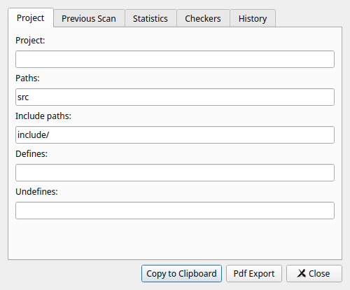
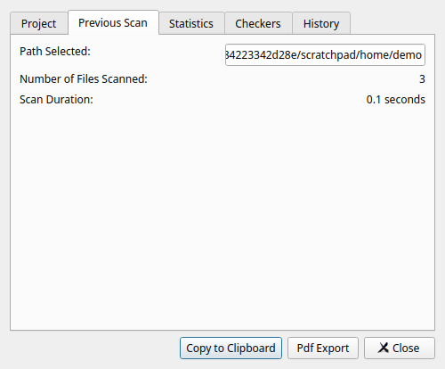
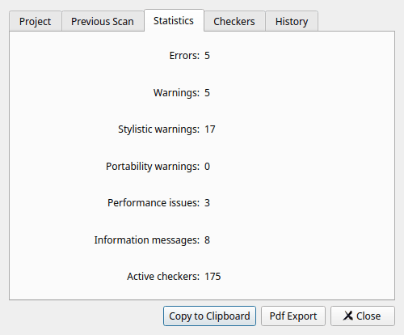

Select File > Save results to file... (Ctrl+S) or click the save button in the toolbar. Choose a file name and a format:
| Format | Contents |
|---|---|
| XML files (*.xml) | All information about each warning: file,
line, column, severity, id, CWE, message, notes, tags and more. This is
the same XML format (version 2) as the command line tool writes with
--xml. The GUI can open it again, and many other tools, for
example CI systems and report generators, can read it. Use this format if
you want to keep the results. |
| Text files (*.txt) | One line per warning, in the classic
Cppcheck text format:[src/buffer.c:9] -> [src/buffer.c:10]: (error) Array 'buf[16]'
accessed at index 16, which is out of bounds.The locations of the notes are listed first, connected with ->. |
| CSV files (*.csv) | One line per warning with the columns file, line, severity, id and summary. Open it in a spreadsheet to sort, count and filter warnings. |
Two preferences on the Reports tab affect what is saved:
Select File > Open XML... to open a results file in XML format. The current results are cleared first. The file can come from the GUI or from the command line tool, for example from a CI job:
cppcheck --project=compile_commands.json --xml 2> results.xml
When results are opened from a file, the GUI needs to find the source files
to show the code. If the paths in the file are relative, the GUI asks for the
folder they are relative to when you select a warning. You can also give the
folder on the command line with the -d option; see
Command line options.
XML files in the old version 1 format can not be opened. Use
--xml with a recent Cppcheck version to create files in the
version 2 format.
For results opened from a file, the code can not be analyzed again with Recheck, because the GUI does not know how it was analyzed.
Select File > Print... (Ctrl+P) to print the results, or File > Print Preview... to see what will be printed first. The printout has one line per warning with the file, line, severity and summary. Like saved reports, only the warnings you can see are printed. You can print to a PDF file if your system has a PDF printer.
Select View > Statistics to see statistics about the project and the last analysis. Enable Show statistics on check completion in the preferences to show the statistics automatically after each analysis.
The statistics dialog has these tabs:
The root path of the project, the paths that are analyzed, the include paths, the defines and the undefines.

The path that was analyzed, the number of files and how long the analysis took.

The number of warnings of each severity, and the number of active checkers.

A report of which checkers were active in the analysis and which were not. Use it to see what was checked, for example to document the analysis for a safety certification.
A chart of the number of warnings over time, read from the build dir of the project. Only available if the GUI was built with Qt Charts and the project has a build dir.
Click Copy to Clipboard to copy the statistics as text and HTML, for example to paste them in an e-mail or a document. Click Pdf Export to save them as a PDF file.
Note: the statistics count the warnings of the last analysis in this session. When you open a project with a build dir, the results of the previous session are shown, but they are not counted until you analyze again.